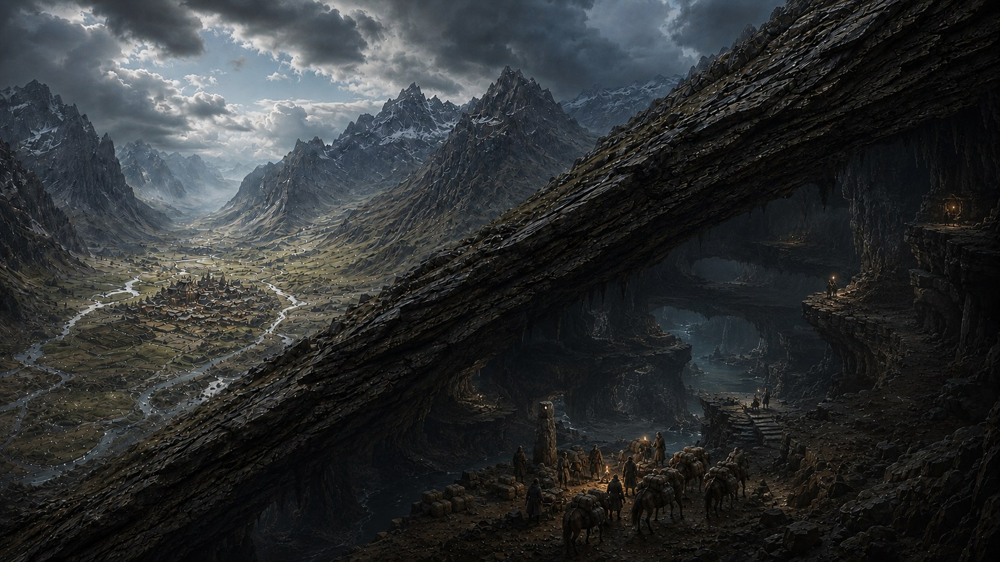
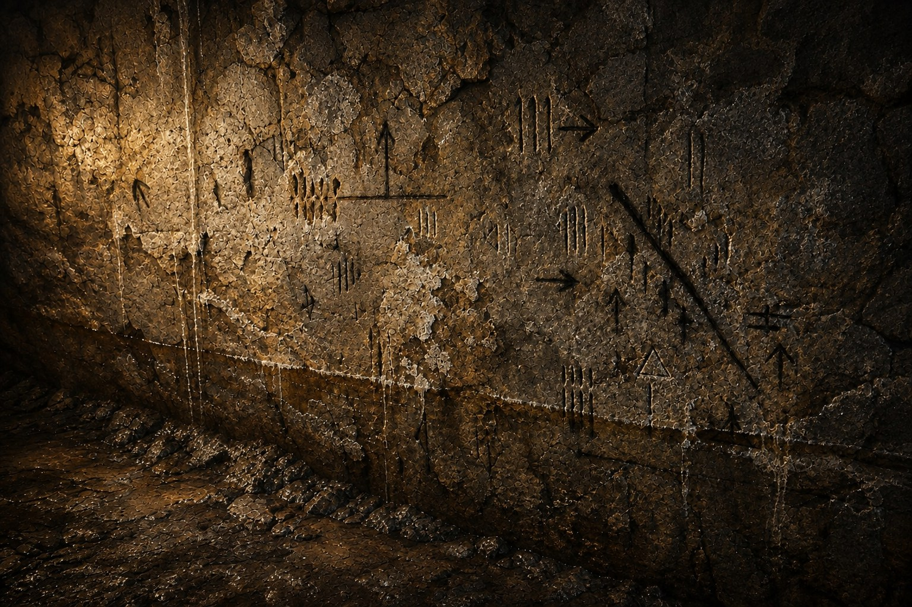
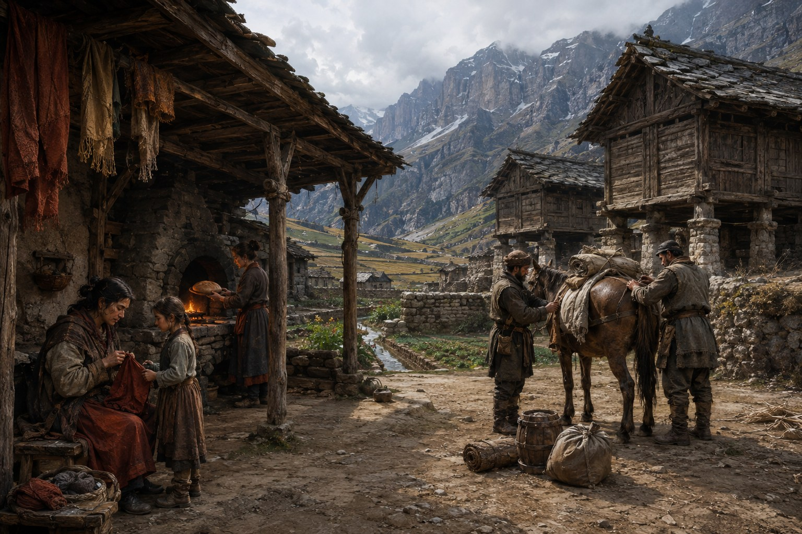
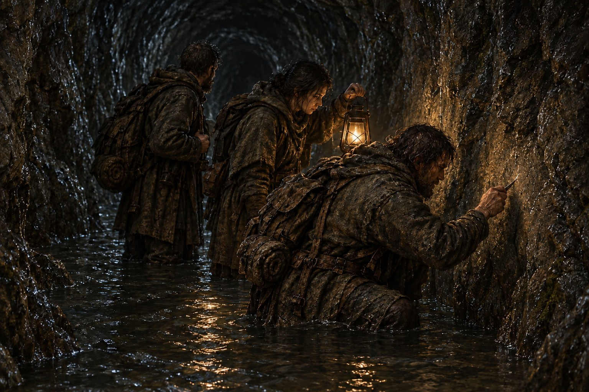
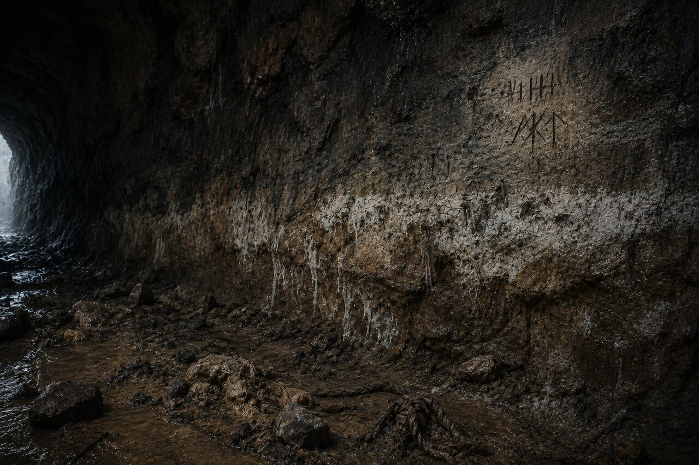
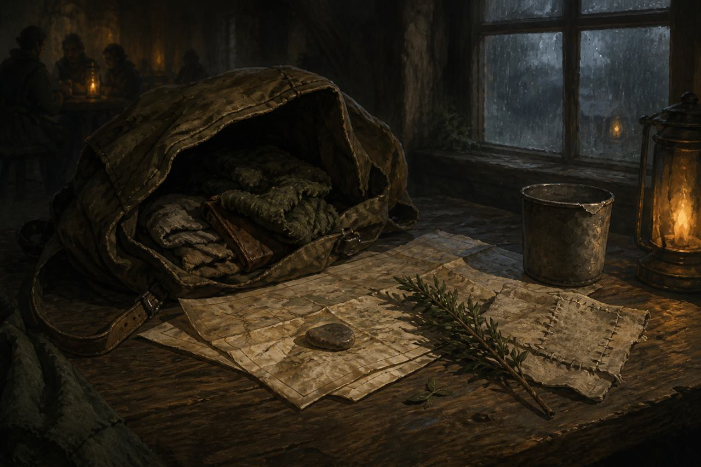

01
The heights divide
Low roads serve the basins. Beyond them, charged ridges make travel between settlements uncertain, even through high tunnels.
Welcome to Edravoss
Cities endure in sheltered mountain basins. Between them, the old roads run through darkness, floodwater and the accumulated memory of generations.
Enter the world
The road is broken. Still, we cross.
The world above
Edravoss rises in walls of stone. Its people live where the mountains relent: enclosed basins of farmland, water and crowded settlement.
Magic gathers with height, troubling high passages inside the rock as well as the slopes outside. Its strength varies between ridges and over time. Travellers learn where weather turns violent and distance becomes unreliable. A lightly laden messenger may risk a surface pass that a grain caravan cannot depend on.
Most basins grow much of their food and keep stores against winter and missed caravans. Trade brings what their ground cannot provide. A poor harvest can make imported grain essential; a closed road then starts a race against the remaining stores. Years of isolation mean finding another livelihood, leaving, or going hungry.
Dry granaries stand above the water. Channels feed fields and mills; garden walls shelter the growing ground. Beneath covered eaves, mended clothes dry in patches of household colour. These are places people want to return to.
01
Low roads serve the basins. Beyond them, charged ridges make travel between settlements uncertain, even through high tunnels.
02
Natural caverns and rivers form an underground country. Old steps, walls and cut passages turn parts of it into roads.
03
A high resting shelf may serve generations while the crossing beyond it floods. Water changes the open paths; collapses can close them for good.
The country below

A lamp reveals the work at hand. The rest of the country waits in darkness.
The Below opens into branching shelves, river basins and distant terraces, then narrows until two loaded animals cannot pass. People widened the tight places and built across the gaps. Fragments of their work join stretches of natural ground.
Caravans carry animal feed, food and lamp fuel. Supplied waystations make longer roads possible, but their stores also come from the basins. Scouts check crossings before the loads follow. Every delay consumes provisions; large caravans and armies need arrangements a small party can travel without.
The network does not rearrange itself. Floods drown familiar ways, silt hides footing and collapses break connections. A sheltered shelf can remain sound while the route beyond it becomes impassable. Boats help on suitable river reaches, but cannot carry a load through every fall or broken passage.
Those who return leave word for those who follow. Shallow warnings wear away, repairs remove old accounts, and deep cuts survive with parts of their meaning lost. A road may reappear after years underwater carrying warnings no living traveller remembers.
The walls do not preserve one history. They preserve the argument.
Road and hearth
Fresh timber beside a drop means somebody carried it down from daylight. An open road is work people have paid for.
A basin may maintain its own descent while hauliers and waystation keepers repair the stretches beyond. Neighbours exchange labour, food and tools. At some crossings, passing loads pay for repairs. At others, old claims to payment outlast the people who did the work.
A keeper who can bar a narrow approach can hold up a much longer road. The gate may protect a damaged bridge or force a hungry settlement to accept a higher charge. Travellers remember who gave them shelter. Keepers depend on the food and lamp oil that arrive with the next caravan.
Every departure leaves work for someone at home. Travellers carry messages and small things entrusted to them alongside their loads. A roadname may get a warning heard below; at home, people want to know whose child has returned and who is still missing.
After a long absence, coming home can mean finding that other people have taken on your work and learnt to live without your return. There may be a meal waiting, and a difficult conversation after it.
The Broken Road
An opening passage from the novel in development.

Opening paragraph · Work in progress
The morning we left, my mother gave me the heel of yesterday's loaf and made me eat it where she could see. Across the yard, the storekeeper was folding empty grain sacks into a bundle. Six weeks, he had told us, if the portions stayed small and nobody took more than their share. He said it again to a man tightening a pack strap, as though the man might have found an extra week somewhere among the buckles. The food road had been buried for three days. Nobody had come through from the other side. My mother picked a crumb from my collar and asked whether I had packed dry stockings. At the gate, our guide lifted her lamp to check the wick. It was full daylight. I finished the bread.
Road Speech
Guides teach the calls. Hauliers compare the marks. Keeping Road Speech shared is work people do.
Hearth Speech changes with each community. Road Speech keeps a small shared core through journeys and teaching, though local signs persist and long isolation can erode understanding. The Cut records practical accounts in rough marks that leave much for travellers to interpret.
WATER RISE. A witness saw the water rising. Check the level now.
FIVE ENTER. THREE RETURN. A count survives. The reasons may not.
LOWER WAY LOST. Locate the passage the mark refers to before acting.
Direction marks and scratched water levels give a warning context. Fresh charcoal offers a clue to age, not a guarantee. Travellers compare it with the river, the footing and accounts of those returning.
A diagonal cancellation stroke means someone disputes or replaces the warning. It does not mean the road is safe. A newer account sits beside the older one; if they cannot be reconciled, the danger remains unresolved.
At maintained waystations, keepers separate current route reports from the long records and ask when conditions were seen. Cutters preserve the older accounts. A dispute about blame need not prevent agreement that a crossing is flooded.


The road is broken.
Still, we cross.
Stories from Edravoss

The first journey
One of the main food roads has collapsed. The settlement cannot wait for it to be cleared.
Several teams are sent into the tunnels to find another way. This story follows one small party as they leave home, cross into a neighbouring settlement and descend beyond the roads people still remember.
The collapse was deliberate. Nobody yet knows by whom.
A novel in development.
Every road carries a story.
Every broken road leaves one behind.